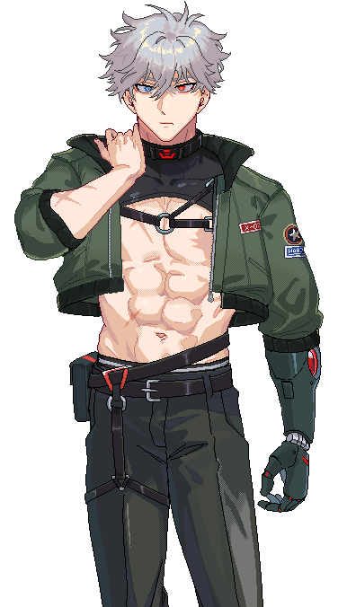
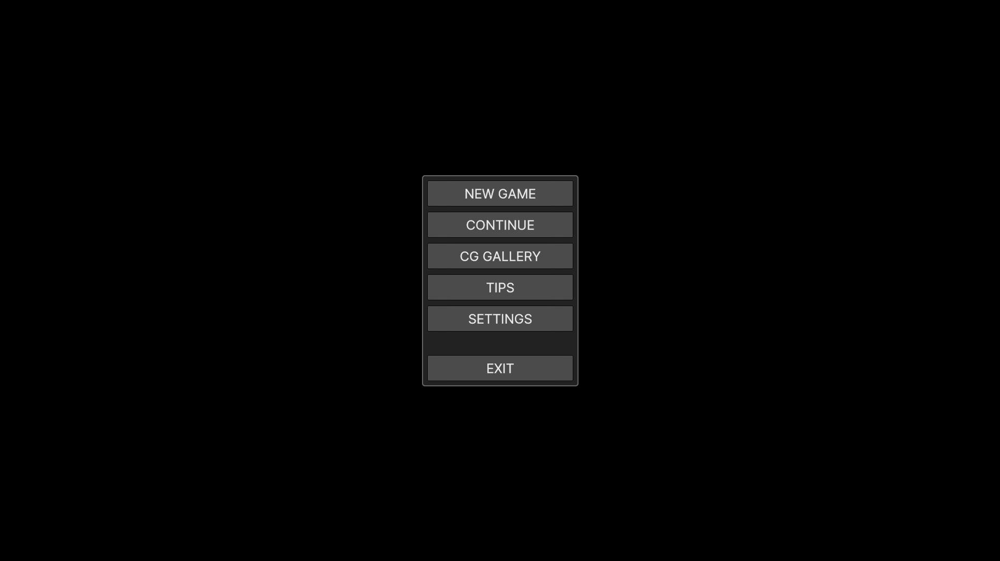
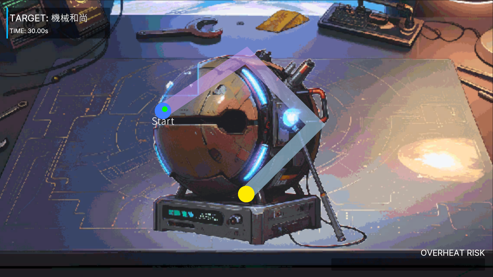
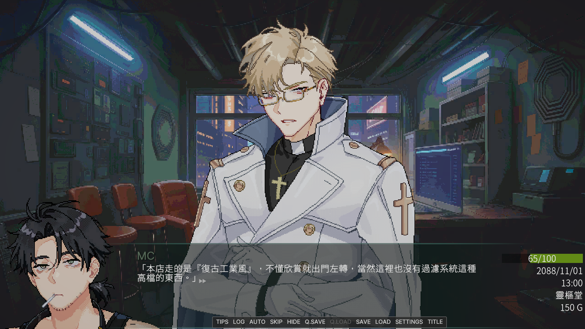

靈樞堂 —— 被詛咒的電子產品維修專家
Fixing the Cursed. Unlocking the Truth.
關於遊戲
霓虹燈照不透的巷弄深處，你繼承了祖父留下的一家小店——靈樞堂。這裡專門維修「不該動的東西」：被詛咒的義眼、失控的神經晶片、還有那些連黑市工程師都不敢碰的禁忌之物。
白天，你維修顧客送來的故障設備；傍晚，你調派你的夥伴深入危險區域搜刮資源；深夜，你會在螢幕前讀著來路不明的郵件，揭開這個城市最黑暗的秘密。
在這個遊戲中，你將同時扮演維修技師、小隊長和店主。完成維修訂單賺取金錢，用金錢購買裝備並派遣角色執行危險任務，再透過任務獎勵解鎖更多故事與結局。
28天的遊戲循環中，每一個選擇都會影響你與兩位男主角的命運。
跟隨冷酷的異端審判官 Xavier 探索教會與企業的黑幕，或是與身世成謎的改造逃亡者 Lycaon 在底層街頭尋找真相。選擇誰，將決定你最後看到的結局。
遊戲世界觀
巨型企業掌控一切資訊，底層人民靠修補淘汰科技勉強維生。數據是新的黃金，詛咒是常見的副作用。
你的店同時也是城市中最奇怪的資訊節點——那些「壞掉」的設備往往藏著不該被看見的記憶與秘密。
企業管線交界處，三教九流匯集之地。這裡有最便宜的零件，也有最危險的任務。
透過「接收器」與外派夥伴保持連結。他們在前方作戰，你在後方指揮——每一次派遣都是生與死的賭博。
主要角色
白袍金絲眼鏡，手持精密掃描儀器的審判官。來自光環科技下屬的異端審裁處，專門處理「數據層面的神異事件」。冷靜、克制、每一句話都是陷阱——但他在靈樞堂前停留的時間，似乎比必要的更長。

銀髮異色瞳，左臂為改造機械義肢。曾在企業實驗室中度過不為人知的歲月，逃出後成為地下區最危險也最值得信任的夥伴。脾氣火爆，忠誠度卻是MAX——只要他認定了你。
核心系統
顧客將「損壞的電子產品」送到靈樞堂——有時它們只是需要重新焊接，有時它們承載著不屬於這個世界的數據詛咒。玩家操控維修探針，沿著故障路徑前進，避開障礙物，在時限內完成維修。
利用「接收器」與外派角色保持連結。選擇區域、安排路線、配置角色——然後看著他們一個節點一個節點地前進。戰鬥、搜索物資、面對隨機事件，每一次派遣的結果都不會相同。
維修收入 → 購買物資 → 派遣強化 → 承接更高階訂單。物資分為工具、消耗品、素材與關鍵道具。有些東西只能透過派遣獲得，有些東西錯過了就永遠消失。
每天早晨，你會收到一份地下區的新聞簡報。天氣與城市狀態會影響當天的派遣效率（數據風暴、設施警戒等）。這些動態修正項讓每一次遊戲體驗都不一樣。
全語音戀愛冒險部分採用 Naninovel 引擎驅動。豐富的對話選項、角色表情差分、路線分歧與多結局結構。28天的遊戲日曆中，每一次對話都在為結局做鋪墊。
每個角色都有力量、敏捷、體力、忠誠度與好感度等屬性。派遣消耗體力與生命，好感度影響對話選項與結局觸發，忠誠度決定角色是否願意執行高風險任務。
視覺設計
參考 SFC / PS1 時代的精緻像素美學，融合現代光影技法。室內場景以暖黃工作燈光為主，街景則以冷藍霓虹燈為基調，對比強烈但和諧。



開發概況
Unity 專案設定、Naninovel 整合基礎維修/派遣系統。已完成基礎閉環。
經濟循環、新聞系統、角色屬性系統聯動。
劇本撰寫、30+ 維修關卡、派遣區域與節點池。
UI 優化、數值平衡、完整測試。